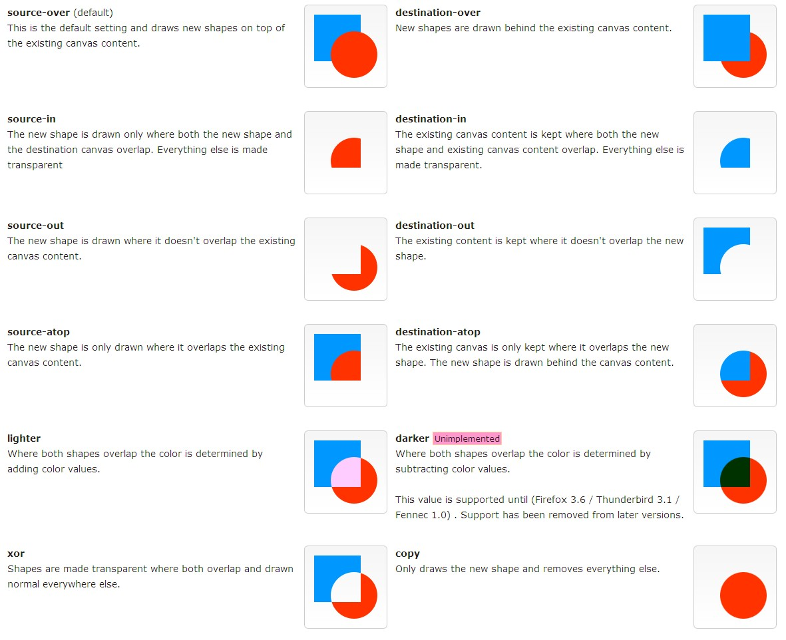

09-Canvas的合成属性
1.获取标签
2.globalCompositeOperation 目标和源的合成关系
3.画第一个图形
4.画第二个图形
Canvas里的globalCompositeOperation是个很少用到的函数,
Composite(组合),就是对你在绘图中,后绘制的图形与先绘制的图形之间的组合显示效果,比如在国画中,你先画一笔红色,再来一笔绿色,相交的部分是一种混色,而在油画中,绿色就会覆盖掉相交部分的红色,这在程序绘图中的处理就是Composite,Canvas API中对应的函数就是globalCompositeOperation,这个属性是全局的,所以在使用的时候要注意save和restore.
示意图: 先画的是蓝色正方形,再画红色圆形

ctx.globalCompositeOperation = 'destination-out';
source-over 默认,相交部分由后绘制图形的填充(颜色,渐变,纹理)覆盖,全部浏览器通过
- source-in 只绘制相交部分,由后绘制图形的填充覆盖,其余部分透明
- source-out 只绘制后绘制图形不相交的部分,由后绘制图形的填充覆盖,其余部分透明
- source-atop 后绘制图形不相交的部分透明,相交部分由后绘制图形的填充覆盖,全部浏览器通过
- destination-over 相交部分由先绘制图形的填充(颜色,渐变,纹理)覆盖,全部浏览器通过
- destination-in 只绘制相交部分,由先绘制图形的填充覆盖,其余部分透明
- destination-out 只绘制先绘制图形不相交的部分,由先绘制图形的填充覆盖,其余部分透明,全部浏览器通过
- destination-atop 先绘制图形不相交的部分透明,相交部分由先绘制图形的填充覆盖
- lighter 相交部分由根据先后图形填充来增加亮度,全部浏览器通过
- darker 相交部分由根据先后图形填充来降低亮度
- copy 只绘制后绘制图形,只有opera通过
- xor 相交部分透明,全部浏览器通过